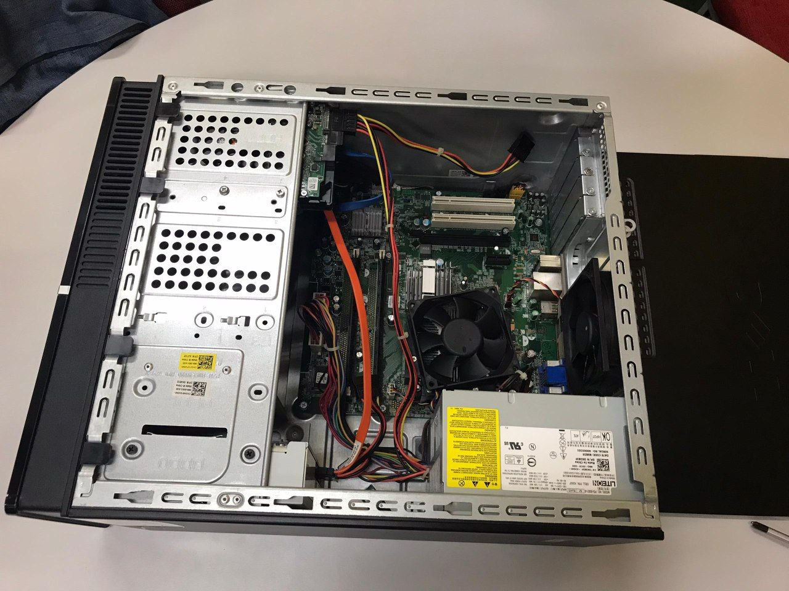
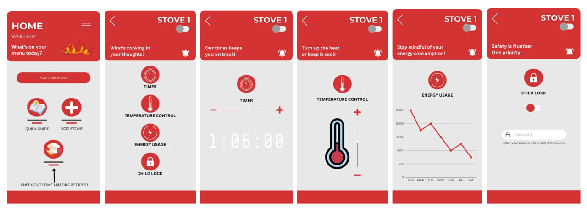

SECP1513 TECHNOLOGY AND INFORMATION SYSTEM
Assignments
&
Reflections
Take a closer look!
There are a total of six assignments, as listed in the coursework.
(Note: Navigate to the next page by clicking on the 'Next' button located at the bottom of this page.)

PC assembly is a fascinating process that combines technical knowledge with hands-on skills.
Assembling each component, from the CPU to the RAM and hard disk, requires precision and attention to detail.
PC assembly not only enhances technical proficiency but also instills a sense of accomplishment as the completed build powers up successfully.
I learned how to assemble PC from identifying components to connecting cables.
Here are the steps to assemble a PC:
PC Disassembly:
- Open the casing
- Disconnect SATA cable
- Disconnect power supply cable
- Remove power supply
- Remove RAM
- Remove hard disk
- Remove CPU fan
PC Reassembly:
- Attach CPU fan
- Install hard disk
- Install RAM
- Attach power supply
- Connect power supply cable
- Connect SATA cable
- Close the casing
October 23 - November 30, 2023
Design Thinking: Electrive Stove Controller
(Low Fidelity Prototype)
Generated an idea for a prototype, the 'Electric Stove Controller' and worked through five phases: empathized, defined, ideated, prototyped, and tested.
Report on Design Thinking Project
My goal in taking this course is to gain a deep understanding of concepts in the network and security field and develop practical skills to contribute meaningfully to the
industry. Design thinking is essential for achieving this goal as it provides a structured approach to problem-solving, encouraging creativity and user-centric solutions. It equips
me with a mindset that values iteration, collaboration, and continuous improvement enhancing my problem-solving abilities and innovation. To further improve my potential,
I plan to engage in real-world projects, collaborate with diverse teams, and seek feedback consistently. I also aim to stay informed about industry trends, technologies,
and best practices to remain agile and well-prepared for the challenges and opportunities in the field of study.
Furthermore, there are a few improvements that can be made for our project. As we all know, nowadays, we also have the Thermomix cooker, which actually has more advanced features than our electric stove controller prototype.
Despite the expensive cost of the Thermomix, it boasts good features that require less human intervention, as many functions can be controlled without physical interaction. So, I think we could have done better if we were
aware of this, and maybe we can create a better prototype for a low-cost Thermomix cooker with the best functions and features. Therefore, I realize that we didn't conduct enough research in the cooking field during the
ideation phase. In the future, my goal is to conduct thorough research before initiating any project. This approach will enable us to attain a higher level of understanding and better align with the project's purpose.
Electric Stove Controller App

(Prototype Model)